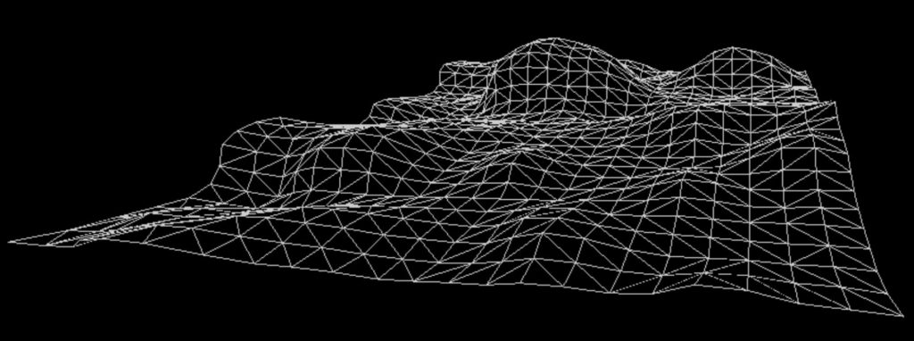

This article discusses how the elements associated with one’s luck is established as a a “fate vector package” upon birth.
We look at the initial starting conditions of the pre-birth world-line template. As it fixes permanently the gravitational influences that surround the physical person.
It is these same gravitational influences influence the role of fate in one’s life.
In this way, a person can understand that birth is very similar to character generation during a role playing game. Much like you can generate the attributes for your character in the old board game Dungeons and Dragons, or any of the First Person Shooter games available in software.
The Fate Forecasting and World-line template mapping
For those who are unaware, this article discusses four very significant elements in control of your life, and future happiness.
[1] World-Line Templates
The use of world-line topography maps is a major part of life navigation in the MWI reality universe that we inhabit. You control your thoughts, and thus you navigate the terrain of entropy that is set up for you at birth. This is conducted by Affirmation Prayer Campaigns. You use these campaigns to focus your thoughts for set periods of time. It's sort of like placing specific navigation beacons that you set your automobile route generating software towards. What's more, you can actually change the entire terrain that you are operating upon. You can do this by "sliding". You can adjust your affirmation campaign to specify a change in the terrain that you inhabit. There are all kinds of terrains, and all kind of features. The one that you were established with at birth is known as the "pre-birth world-line template map". Newly generated template maps can go by other terms. To study this issue, you can go to my Intention Campaign Index HERE.
[2] Fate Forecasting
Fate Forecasting is a method of measurement of the ebb and flow of luck in your life. This is important, as studies have shown that successful and wealthy people do not obtain their positions through merit. It has been proven, time and time again to occur through luck. To study this issue, I have a index on this subject. It is the Fate Forecasting Index that this article is part of and which can be found HERE.
[3] Consciousness Centering
Consciousness Centering is necessary as there are all sorts of things that tug and pull at your brain and consciousness. To optimize your thoughts to be most efficient, and thus most successful, you need to be able to center your consciousness. To accomplish this, you need to use tools and techniques to do so. Here at MM we have provided Hemi-sync (FFR) to accomplish this. You can access the files to listen to and learn and center your consciousness HERE.
[4] Rufus Behaviors
Physical actions influences the thoughts of those around you. My surrounding yourself with other people who generate happy and positive thoughts when you are around, your world tends to move in positive directions. A study of "Rufus" actions can be found in the Rufus Index HERE.
Western horoscopes vs Chinese Bazi
Both systems use planetary alignments to estimate the fated luck that a person will endure in their life.
Western horoscopes tend to be simplistic, and only utilize planetary alignments and empirical observation to arrive at forecasts. They are only associated with the date of birth, are not tied to a given latitude or longitude, and do not recognize non-physical components. Further, the Newtonian physics takeover of the educational systems int he 19th century, pretty much relegated all horoscope prediction matters to the realm of disdain and pseudo-science. This is further aggravated by hoaxers who set up for-profit entities to fleece the gullible. Western horoscopes have been in existence in their current form around three thousand years.
Chinese BaZi horoscopes are more detailed, more exacting, and incorporate general geographical influences in their calculus. They also incorporate non-physical gravitational elements and have a much more involved interaction of play between the various elements involved. Further this method of divination has been around since the beginnings of Chinese written records which is at least 6000 years old.
The premise
The planetary gravitational influences on a biological being influences their life. We refer to this a “luck“.
Since the movements of the gravitational influences are fixed and immovable, the luck is fixed. We refer to this as “Fate“.
These gravitational influences are independent of other templates. So you cannot conduct a “slide” to another world-line template to change your fortune. Everyone must deal with the ebb and flow of their luck. This is their fate.
Since the gravitational forces change over time using Newtonian physics, we can predict the rise and fall of luck. We refer to this as “horoscope generation“.
Example
For the purposes of illustration, let’s consider a person born under the Western horoscope of Leo. Which is around July. Their Western horoscope would predict the relations of fate in their lives, and for the most part would seem to agree with what the person experiences.
But if you get into this further, you could look at the BaZi and discover that this person is a “Dog Sign” given their birth day, year, month, hour, second and geographic latitude and longitude. At the precise moment of birth, the planetary alignments and gravitational forces were fixed. And by using Newtonian astrophysics, the movements of the planets and their gravitational influences can be mapped out over the given life time.
So irregardless of what the pre-birth world-line template is, the fate will follow a predictive ebb and flow of luck.
Further, the BaZi breaks down the luck into components or “packages”. And the interaction of those packages will determine how the luck manifests.
Now, whether you are on a pre-birth world-line template, or slide to a new template, you luck (as fate) is still manifest.
Now, in this example, if the fate says that you have a high potential to be scammed in business, this will still occur. However, different world-line templates will have decidedly different manifestations of that luck.
A calm level topography template map

The business scam will be minor and easily avoided. There just aren't any hills or mountains to indicate effort or discord. There are no problems with entropy. So (for example) the business discord might manifest as an employee stealing a box of pencils.
A mountainous topography map
In this case, you know that there is a massive build up of entropy. This will help trigger events that you will need to deal with. In this case, a business discord might be a customer that scams you out of a million dollars, steals your wife, and burns down your office building.
A easy-going topographical map with many valleys
In this case, the entropy is positive and the travel on the MWI world-line map tends to be easy going and not problematic at all. Yet the fate of some kind of business discord may still manifest. This could be something like some leaves blowing on the lawn of your office building, if anything at all.
What manifests in your fated luck depends on the terrain of your world-line template map. You need to be aware of your fate; what is auspicious and what is not, and adjust your MWI navigation through the world-line as necessary to avoid the most dangerous of event cycles.
Character generation and the Mantids
What apparently happens in Heaven is that the consciousness decides to “descend” into the General Population to experience “life”. Often this includes hardship and turmoil and personal sacrifice to obtain “growth”. The Mantids help the consciousness plan for the next foray into the earth environment. They do this by establishing a “Fate Path” that coincidences with the MWI in the Reality Universe.
A “pre-birth world-line template” is constructed. Then a “Fate profile” is used to generate a “Fate Path” that coincidences with the “Life line” that the consciousness would endure. This sets up the “Luck Triggers” that will keep the consciousness on the path to follow the adventures, experiences and lessons that the Mantid planned for the consciousness.
Key to all of this is the selection of parents and the DNA of their resulting offspring that will be the host skin suit for the consciousness to occupy.
Thus the Mantids create a character generation effort prior to the consciousness injection into the General Population on the Earth. This is similar to that of a role play game or first person shooter.
The attributes of skin-suit character generation are…
- Pre-birth world-line template.
- Entry date and time.
- Entry geographical location on the MWI.
- Parent selection and skin-suit DNA.
- Fate profile. (For the Fate Path.)
- Luck Triggers.
- Tell tails, sign posts, and periodic alerts.
Tracking this process
Perhaps we can look at examples of people who remember their previous life for clues to this character generation process.
There are well-known cases of children remembering past lives, including two-year-old James Leininger, who had nightmares about being a WWII pilot, and four-year-old Ryan Hammons, who remembered being Marty Martyn (a dance director and manager of motion-picture actors) in a past life. And of course, stories of reincarnation are not limited to children. Several adults claim to have been someone else in a past life.
“This Is My Ship”
When William Barnes was four years old, he drew a ship with four smokestacks. He showed the drawing to his parents and told them, “This is my ship, but she died.”
Soon he started insisting that his family call him “Tommy”’ instead of William, and he wouldn’t stop talking about two brothers and other family members. None of what he was saying made any sense to his parents, and the situation escalated when William started having non-stop nightmares about a huge ship, freezing water, and steel slabs falling on top of him.
The nightmares continued, and it was only at the age of 25 that William sought help. He underwent hypnosis, and during the session, he could hear himself arguing about “the ship’s design.” As soon as he awoke from the hypnotic trance, he told the counselor, “My name is Tommy Andrews.”
Soon the fragmented pieces of William’s nightmares started forming a complete picture. He became increasingly convinced that he was the reincarnation of Titanic designer Thomas Andrews.
William Barnes was born on the date the Titanic sank, and during hypnotic age regression sessions later in his life, he spoke with a heavy Irish accent while detailing the sinking of the ship and how he died on the deck.
William now has his own website on which he details his experiences and presents proof of his claim to reincarnation fame.
This example does not seem to imply any pre-planning at all. It suggests that a consciousness died and then immediately went and occupied the first available physical body. Because the memories are still fresh in the child's mind, it is obvious that this consciousness did NOT go through the "tunnel of light" and did not have their memories erased.
Two Past Lives
A three-year-old Thai boy named Dalawong became the focus of many studies and articles after he claimed to have had two past lives, one in which he was a deer killed by a hunter and then another one as a cobra when he was reincarnated after his death.
Three animal species. [1] Deer. [2] Cobra. [3] Human.
While he was a snake, Dalawong found himself in a life-or-death fight with two dogs. The dogs’ owner intervened and killed the snake—aka Dalawong—but not before the slithery reptile bit him on the shoulder. The dog owner, Mr. Hiew, took the dead snake home, cooked and ate it, and shared some of the meat with a friend. That friend would become Dalawong’s father.
Fast forward to three years after Dalawong’s birth, the young boy recognized Mr. Hiew at a party taking place next door to his own house. He became instantly angry and tried to find a weapon to attack the man. Dalawong’s mother was stunned at her child’s anger and forced him to tell her what was happening. He related the snake tale to her, and when she confronted Mr. Hiew, he confirmed that he had indeed killed a snake a few years prior and that he had a mark from where the snake had bitten him on the shoulder.
Before this incident, human Dalawong and his family had never met Mr. Hiew.
Again, in this case very little time had passed between the last death and the new birth. That also suggests that there wasn't that much planning work for the current life. Further, we see that the reentry to the General Population is in close geographical proximity to the previous life. In this case, as well as the previous case, the consciousness; the IS-BE immediately boomeranged back to the Reality Universe without an apparent visit to "Heaven". Because the memories are still fresh in the child's mind, it is obvious that this consciousness did NOT go through the "tunnel of light" and did not have their memories erased.
Why Did You Let Me Die in That Fire?
In 2014, the parents of four-year-old Andrew Lucas began suspecting that their beloved boy may be possessed or have some kind of ghost inside of him. This happened after Andrew started crying almost non-stop and asking why his parents let him die in a fire.
When his mother, Michelle, asked him what fire he was talking about, Andrew started telling her little details of what was his past life as a U.S. Marine. Eventually, Michelle used these details to uncover the story of U.S. Marine Sergeant Val Lewis, who died in a bomb attack in Lebanon in 1983.
Because the details of what happened to Lewis and the story Andrew told her were so similar, Michelle decided to take the issue to the reality TV show Ghost Inside My Child. During the show, Andrew was given several photographs of military men to look at, and he immediately zoomed in on an image of Lewis.
Afterward, Michelle took her son to Lewis’s gravesite in Georgia, where Andrew laid flowers in front of it. He also ran to another grave and pointed to the name on it, saying, “That’s my friend.” It turned out that grave also belonged to a Marine.
This third example is also a relatively quick return. From 1984 to 2010 is 26 years. We can assume that in this case, 26 years is a long period of time to float around the General Population searching for a skin-suit to occupy. So the consciousness must have made arrangements with a Mantid to generate a pre-birth world-line template. However, the memories are still fresh in the child's mind. That implies that this consciousness did NOT go through the "tunnel of light" and did not have their memories erased.
Toddler Recalls Past Life Murder
A very unnerving story caused an uproar in 2014 when it was reported that a three-year-old Syrian boy had pointed out where his past life’s body had been buried after he was murdered. He also pointed out the murder weapon.
The boy, who belongs to the Druze ethnic group, has a long red birthmark on his forehead, which according to Druze beliefs, is related to how a person died in a previous life.
This belief was seemingly substantiated by the boy, who told his parents that he had been killed by an ax to the head in his previous life, hence the birthmark.
The elders of the village the boy stayed in took him to the home he lived in during his past life, getting the location from the details the boy gave. Eventually, standing in front of the house, the boy remembered the house, the village, and his old name.
The man whose house it was, had gone missing four years earlier, according to locals.
When the elders quizzed the boy about this turn of events, he told them the full name of the person who had killed him when he was the man who lived in the house.
He then led the elders to the spot where the body was buried, and sure enough, they uncovered a skeleton with a headwound that correlated to the boy’s birthmark as well as an ax.
When confronted by the elders and locals, the killer confessed to the crime soon after.
Again, this youthful memory of the death in a prior life, and a very short period between the death and birth in the same geographic area is suggestive of a consciousness that intentionally wants to stay in the General Population, does not want to go into "Heaven" and does not go through the "Tunnel of light". This also implies that the planning for a life-line of substance and learning; the collection of lessons and experiences are missing.
Past Life During WWII
During her pregnancy, When Daw Aye Tin had a recurring dream about a Japanese soldier who told her he would be coming to stay with her and her husband in their Upper Burma (Myanmar) home.
She gave birth to her daughter, Ma Tin Aung Myo, on December 26, 1953. When her daughter turned four, she started talking about her “real home of Japan” and how much she missed it. She also made it known that she was afraid of planes and didn’t like English and American people.
Eventually, it became clear to When Daw Aye Tin that her daughter had lived before. Details provided by Ma Tin Aung Mao as she grew older included being a male soldier stationed in Nathul during WWII and running a small shop to provide for her children. She was killed when the Allies attacked, and a soldier shot at her from a plane.
10 to 15 years after death. Seems to be the norm. Yet she still remembered her past.
Reincarnated Lama
A City of Dreams
When James Arthur Flowerdew was 12 years old, he began having strange dreams. These dreams were blurry and vague when they first started, but over time they became clear pictures. As he continued to dream, he saw a stone city carved into a cliff and various temples inside the city. He also saw a rock shaped like a volcano situated on the fringes of the stone city. Arthur didn’t know what to make of these dreams and tried to ignore them.
On one particular day, Arthur visited the beach with his family. As he was playing around with pebbles and bent down to pick them up, a vision slammed into his head. It was the city of his dreams. So intense was the vision that he could smell dry desert air. Dropping the pebbles made the image dissipate, leaving Arthur at a loss for words. He revisited the beach a short time later to see if the vision would happen again, and as soon as he picked up the pebbles, it did.
He saw more details the second time, such as a stone passage and military barracks. For the first time, Arthur started thinking that he may have been a soldier in this dream city and had been killed there by a spear. Arthur never had any explanation for his experiences. Many years later, when he was an old man, Arthur watched a documentary about the ancient city of Petra in Jordan. He instantly realized that this was his city of dreams, and he became convinced that he had lived there in a past life.
He contacted the BBC, who arranged an interview between Arthur and an archaeologist. The archaeologist was flabbergasted when he discovered how much knowledge Arthur had of the ancient city without ever having been there in his current life.
Eventually, the Jordanian government invited Arthur to visit Petra. Arthur found his way around the city without the help of a guide or map and pointed out sites that hadn’t been excavated yet. He talked about a military barrack where he worked with a check-in system for guards, and even provided facts about the area that experts were not aware of.
My Life as a Monk
In 1987, three-year-old Duminda Bandara Ratnayake started talking about the Asgiriya temple and monastery in Kandy, saying that he used to be an abbot there.
Duminda was born in 1984 to Sinhalese Buddhist parents and was the second youngest of three brothers. He talked about the temple non-stop and also told his mother that he had owned a red car, taught other monks, and died in a hospital where he was taken after experiencing sudden sharp pain in his chest. He also “recalled” having had a pet elephant.
The little boy soon started wearing his clothes in the way of a monk and visited a Buddhist temple twice a day. He also began reciting stanzas in the Pali language. His mother began fearing that her son would want to leave his family to become a monk.
By age five, Duminda’s interest in going to the temple waned somewhat, but by age six, his mother had permitted him to go to the monastery when he turned seven. At this point, he also didn’t want to go to a school with girls and didn’t want women, including his mother, to touch his hands. When the abbot of the Malwatta Temple died in 1990, Duminda randomly exclaimed that he had known him well.
It seemed that Ven. Mahanayaka Gunnepana, who died of a heart attack and owned a red car, could have been Duminda in a past life.
Gunnepana also had an elephant.
“I Am Anne Frank”
Barbro Karlen was born nine years after Anne Frank died. From a young age, she insisted that Barbro wasn’t her real name and that her family should call her Anne instead. She also told her parents that she knew they weren’t her real mom and dad. At that point, Barbro’s family wasn’t up to date with the Anne Frank story and thought that Barbro was losing her mind. They carted her off to a psychiatrist, thinking that she was somehow lost in a fantasy.
By age twelve, Barbro wrote a book of poetry that would become one of the most popular books in her native Sweden. She went on to write nine more volumes. However, she couldn’t shake the feeling that she wasn’t who everyone thought she was. But she stopped talking about it after she realized who Anne Frank was and that people likely thought she was insane.
This was despite the trip to Amsterdam with her parents at age 10, during which they visited the house of Anne Frank. Barbro knew exactly how to get to the house and that the steps outside it had been changed. Her parents were stunned. Once Barbro entered Anne’s room, she felt an overwhelming fear but refused to leave. She knew that there had once been pictures on the wall, placed there by Anne, and when she told her mother this, the older woman finally understood what her daughter had been trying to tell them for years. She was Anne Frank in a past life.
Barbro met Anne’s cousin Buddy Elias years later, and he told reporters he believed that she was the reincarnation of Anne.
Born nine years after the death.
“The Floor Got Really Hot”
In March 2021, Tik Toker Riss White gave her account of what her daughter told her a few years ago. It was September 11, 2018, and Riss was looking at 9/11 memorial posts on social media.
One of the posts had a striking image of the Twin Towers, and when her then-four-year-old daughter saw it, she said to Riss, “Hey mom, I used to work there.”
Riss, feeling slightly uneasy, asked her daughter when this was, to which the young girl simply replied “before.”
She went on to tell her mother that during one morning at work she had to get up on her desk because the floor got really hot. She and her friends had tried to escape the hot floor by leaving through the door, but the door wouldn’t open. She then jumped out of the window and “flew like a bird.”
Riss was shaken and still can’t make sense of what her daughter told her. She also confirmed that the young girl had never been told about 9/11.
14 years had passed for this little girl. The fact that she remembered her past suggests that she did not experience memory erasure. Thus, either... [1] She went to Heaven but did not have memory erasure, and had here pre-birth world-line template mapped out. [2] She went elsewhere and had her pre-birth world-line template mapped out by others. [3] She hung out on the prior life template as a disembodied spirit for 14 years and chose this life on her own.
Conclusions from above…
I really do not have all the answers, but apparently you are not forced in the “tunnel of light” and forced to undergo mind wipe. You have a choice.
[1] You can go into the “Tunnel of light” and arrive in Heaven. Once in Heaven you can stay, go to school, frolic and plan your next earth general population experience. The Mantid Prime will assist in this effort.
[2] If you refuse to go to “Heaven” then you are on your own to be a spirit, and then find a body to occupy on your own. All the time sticking close to your previous life-line world-line template. At this point you are a free roaming spirit. You are trapped in the Prison Planet Environment and fixed to the MWI world line template of your last incarnation.
[3] If you find a body that you want to occupy, then you simply take the body and claim it as yours and accept what ever world-line and Fate Forecast that goes with that body.
Derived conclusions about the Mantid Involvement…
In situation [1] above, your Mantid “hands you off” and you are left to go through the “tunnel of light” to be welcomed by friends, family, and Mantid Prime overseers. Consciousness goes from General Population Mantid control (GPM) to Mantid Prime control (MP).
In situation [2] above, your Mantid apparently abandons you and you are free to roam. There isn’t any Mantid interaction necessary. Mantid interaction in General Population is apparently limited to physical bodies even though they are trans-dimensional beings. I suspect that this is an evolved situation as the Prison Planet was not designed to have any “free roaming” disembodied spirits.
In situation [3] above, upon adopting and accepting a new body to reincarnate in, you accept the guidance of a new Mantid that will control the levers of your existence. All physical bodies in the MWI Reality Universe is apparently under the control and manipulation of specific Mantids that control the environments.
MM thoughts
In a previous post, I discussed my memories of my previous life prior to being MM. The difference in time from my death in the last reincarnated life to my present life was around 30 years.
I can confirm that when I entered this particular body that I told myself NOT TO FORGET that I was going on a great adventure that would be an extra special and exciting adventuresome life of great importance. I have never forgotten this fact, and this is from my own personal memories. Not from recovered memories by Past Life Hypnosis.
Taken together, it appears that MM had this life mapped out and planned intentionally.
And since I did not (apparently) experience the mind wipe though the “tunnel of light” we can make some conjectures on that fact…
- I was programmed for this life outside of the Heaven / Mantid Prime environment. Or…
- I did go to Heaven, and was programmed for this life, but that I was somehow able to get around the “memory wipe” of the “tunnel of light”. This conjecture is validated by my insistence (to myself) to REMEMBER that my adventure would be special.
In any event, my MM experience is different from those who have been listed above as remembering prior lives.
Which then again, confirms that once freed of the General Population prison “skin suit”, the IS-BE is supposed to be transferred from Mantid control to Mantid Prime control. However that system is corrupted / not well policed / fraught with holes and could be bypassed by any IS-BE consciousness that so desires.
The problem then is “what now”?
There are few scant options…
[1] Go to Heaven though the mind-wipe “Tunnel of Light” and be handed off to your Mantid Prime authorities.
[2] Stay in General Population as a disembodied spirit, floating around and hanging out on what ever MWI template that you died upon.
[3] Call on others to pluck you out of the MWI world-line template and get you out of the General Population area without going through the “Tunnel of Light”.
[4] Try to escape the Prison Complex on your own, recover your memories on your own, and avoid all the traps and snares on your own.